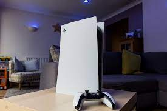
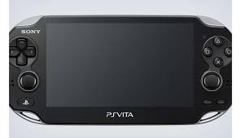
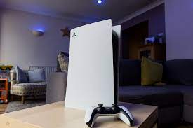
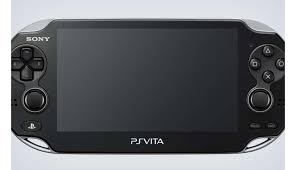

PlayStation (Japanese: プレイステーション, Hepburn: Pureisutēshon, officially abbreviated as PS) is a video game brand that consists of five home video game consoles, as well as a media center, an online service, a line of controllers, two handhelds and a phone, as well as multiple magazines.The PlayStation, one of a new generation of 32-bit consoles, signaled Sony's rise to power in the video game world. Also known as the PS One, the PlayStation used compact discs (CDs), heralding the video game industry's move away from cartridges.The PlayStation reads games from a CD-ROM/XA disc with a laser. The games come on proprietary CD-ROM/XA discs that are read by laser, just like regular CDs. When a game is put in the console, the following happens:.. While the disc is spinning up, the console loads portions of the operating system from ROM into RAM.
.jpg) 



Playstation 3: R3 000
Playstation 4: R5 000
Playstation 5: R9 000
Visit the following website to check for availability of playstaions:https://store.playstation.com › en-za.Playstation 3,4 and 5 is available in white and black colours. Pre-Order PS4 games now. Fast, reliable delivery to your door. Many ways to pay.
| Name | Weight | Dimensions | Barcode |
|---|---|---|---|
| Playstation 3 | 3 kg | 98 x 325 mm | Front |
| Playstation 4 | 3.2 kg | 102 x 340 mm | Front |
| Playstation 5 | 3.5 kg | 120 x 400 mm | Front |